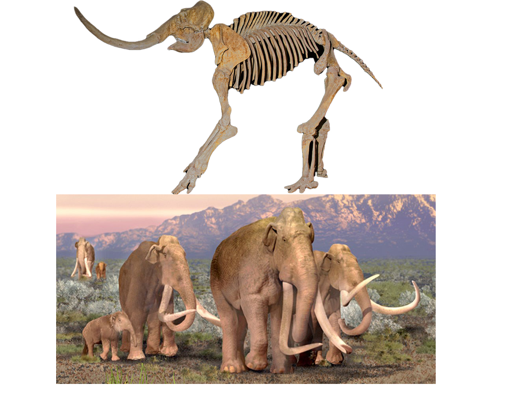

What's An Ice Age?
An ice age is a period of colder global temperatures and recurring glacial expansion capable of lasting hundreds of millions of years. Thanks to the efforts of geologist Louis Agassiz and mathematician Milutin Milankovitch, scientists have determined that variations in the Earth’s orbit and shifting plate tectonics spur the waxing and waning of these periods. There have been at least five significant ice ages in Earth’s history, with approximately a dozen epochs of glacial expansion occurring in the past 1 million years. Humans developed significantly during the most recent glaciation period, emerging as the dominant land animal afterward as megafauna such as the wooly mammoth went extinct. Source:
History.com. Mammoths, camels, ground sloths, bison, saber-toothed tigers, and dire wolves dominated the North American landscape during the most recent Ice Age, which ended 10,000 years ago. Many fossils of these creatures have been found here in the Lone Star State!
Columbian Mammoths
The Columbian Mammoth was so tall a person would need to stand on the second floor of a building to touch its head, and weighed the same as five cars stacked on top of each other. It also boasted large tusks that could easy extend the width of two bicycles laid end to end. Unlike its cousin the Woolly Mammoth. The Columbian Mammoth did not have much fur. North America was generally warmer than the Woolly Mammoth’s homeland of Eurasia.
The Columbian mammoth did share some similarities with modern elephants. They may have lived in herds like elephants, as some fossil sites suggest. Based on our knowledge of elephants, the Columbian mammoth might have lived up to 65 years. Both mammoths and elephants also share similar ridged teeth, good for chewing plants. These teeth grew in sets, with new teeth replacing old ones as the animal aged. These ridged teeth were used to grind grasses, brush, trees, and woody plants. Like modern elephants, mammoths would have had to eat a lot of this food each day to fuel their large bodies. Columbian mammoths most likely spent most of their day eating hundreds of pounds of food.
